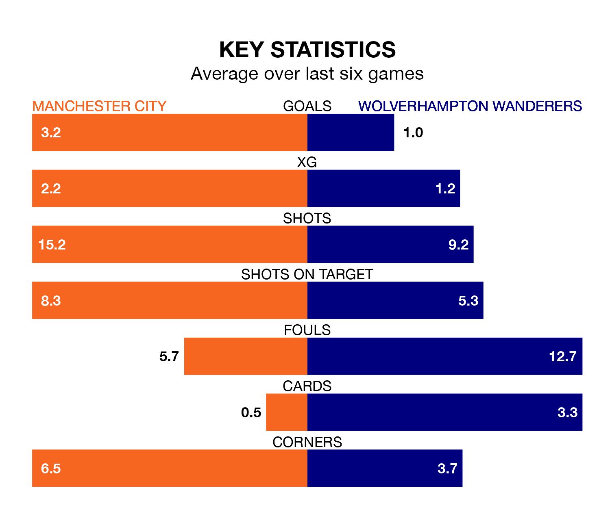

Manchester City are heavy favourites to keep all three points at home in Saturday's late kick-off against Wolverhampton Wanderers.
The Citizens, who sit second in the Premier League with 34 games played, are priced at 1.1 to seal victory at the Etihad Stadium.
Sitting nine places and 33 points behind them in the table, Wolves are 17.0 to win with *Betting Company*, while the draw is at 10.0.
With 82 goals in 34 games so far this season, City are the league's second-highest scorers with 2.4 goals per game. And they are conceding fewer than average, letting in 32 goals at a rate of 0.9 per game.
Wolves, meanwhile, are below average scorers, with 1.4 goals per game, compared to a league average of 1.6. They have conceded 1.6 goals per game.
In Erling Haaland, the Citizens have the league's most on-form striker so far this season. He has notched 21 goals in 27 appearances.
The visitors' top scorers, with 11 goals each, are Hee-Chan Hwang and Matheus Cunha.
The home team are in fantastic form in the Premier League, with five wins and a draw from their last six games.
With a win and two draws over that period, Wolves's form is much worse – they have taken five points from 18, compared to City's 16.
In the last 10 years, City and Wolves have played each other on 13 occasions. City won seven of them, Wolves three, and they drew three times.
On average, the Citizens scored 2.0 goals and Wolves 0.8 in those matches.
Their last meeting was on September 30, when Wolves won 2-1 at home.
City's last match was on Sunday, a 2-0 win against Nottingham Forest, with Braut Haaland and Joško Gvardiol getting the goals for the Citizens.
Wolves beat Luton Town 2-1 last time out, on April 27, with Hwang and Toti Gomes on the scoresheet.
Updated: 10:44 (UTC), 30/04/24